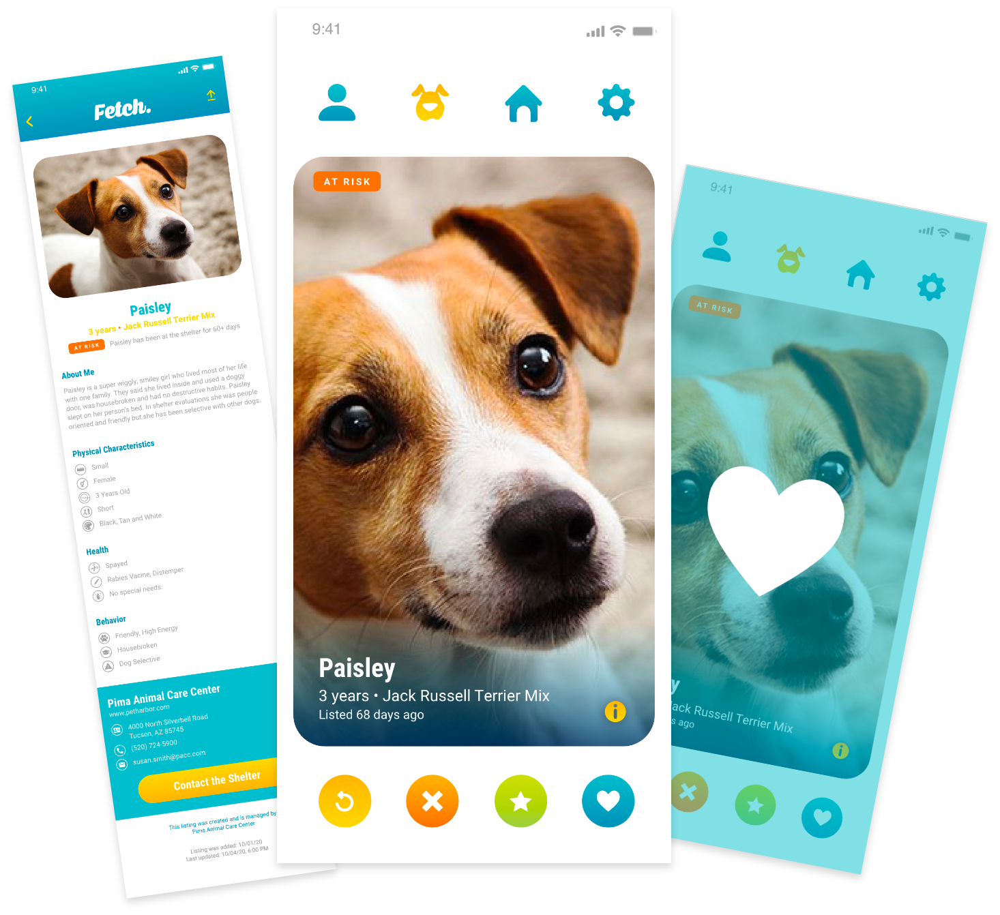
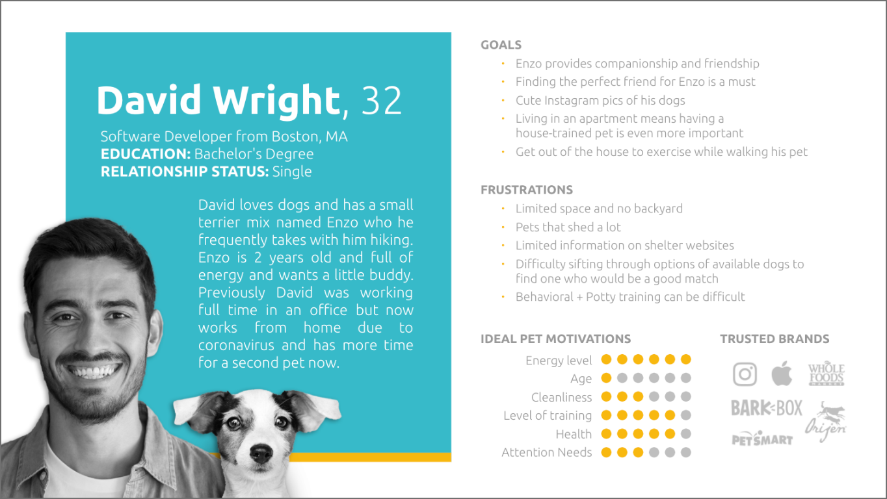
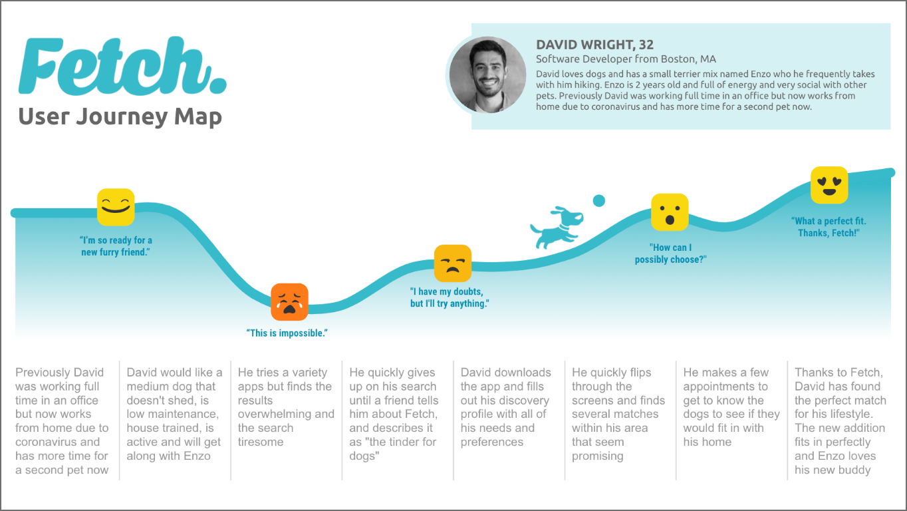
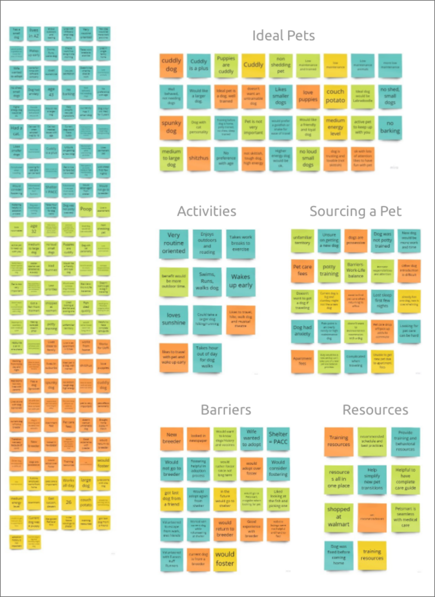
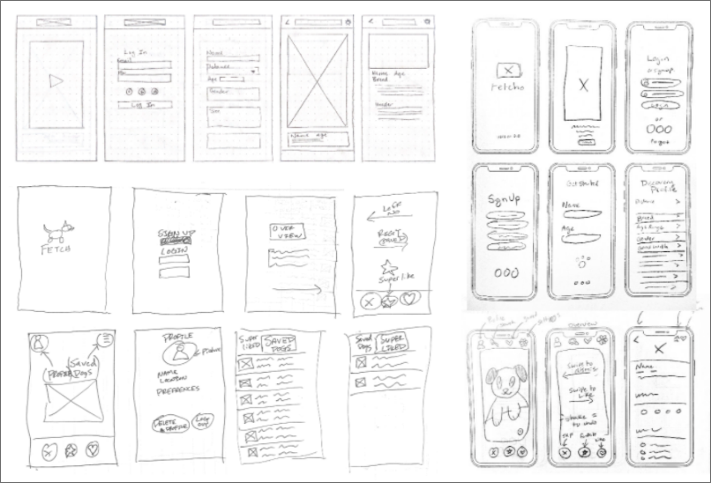
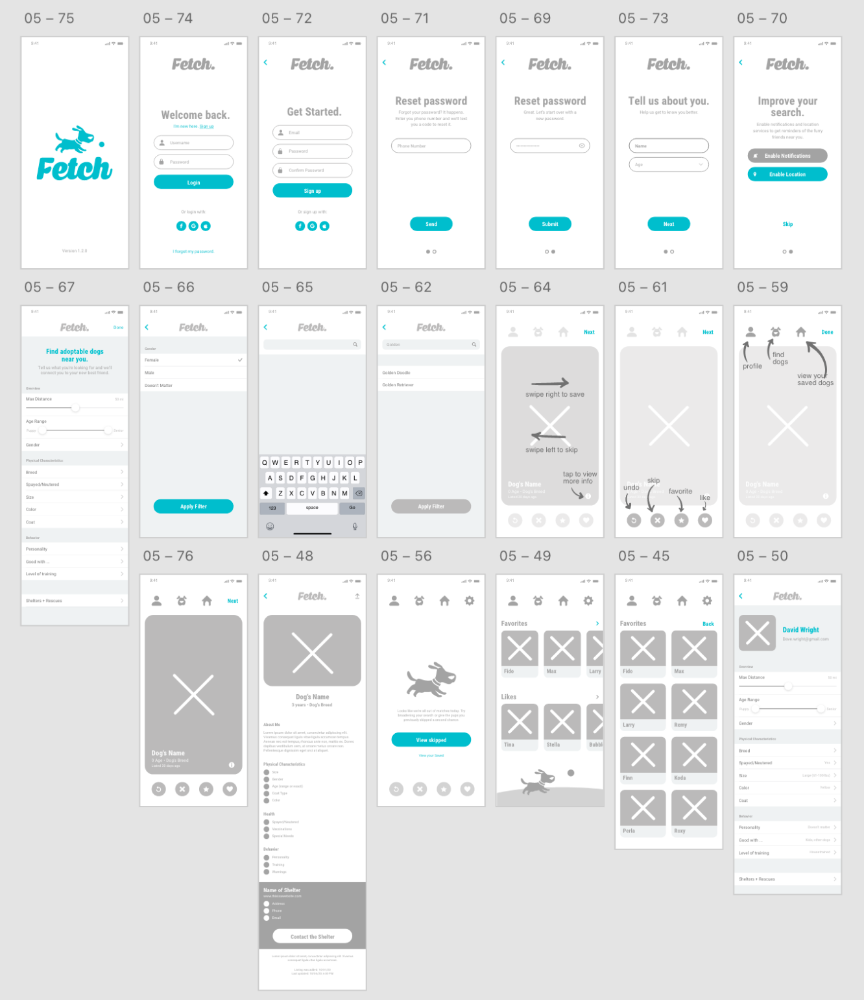
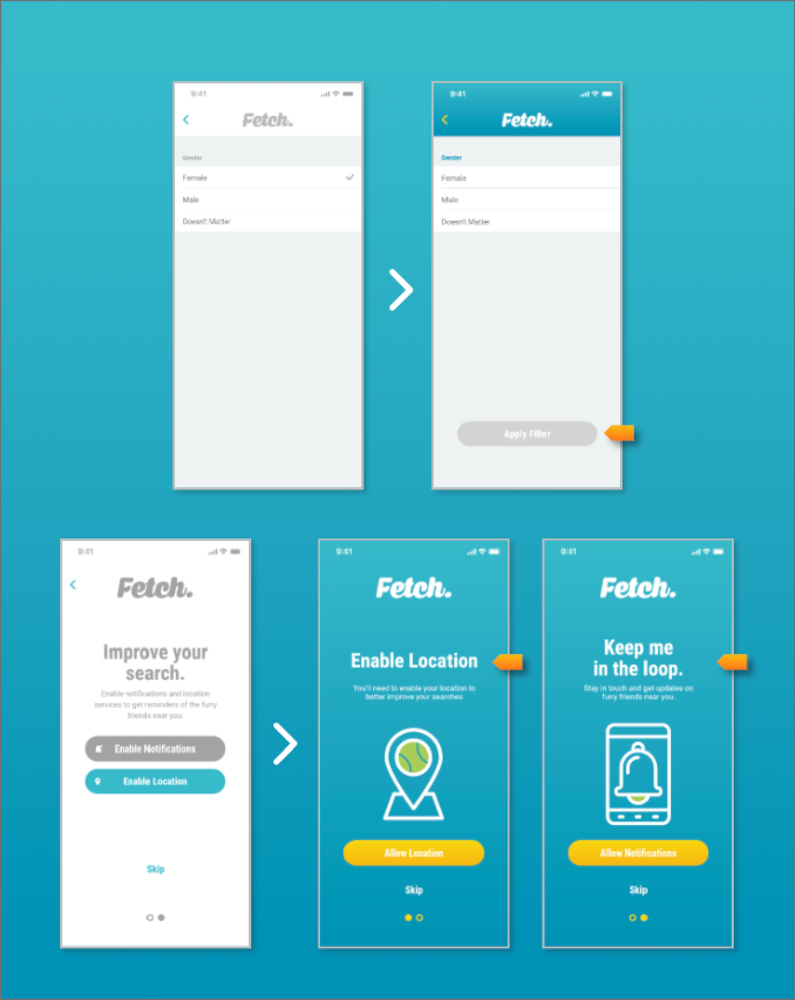
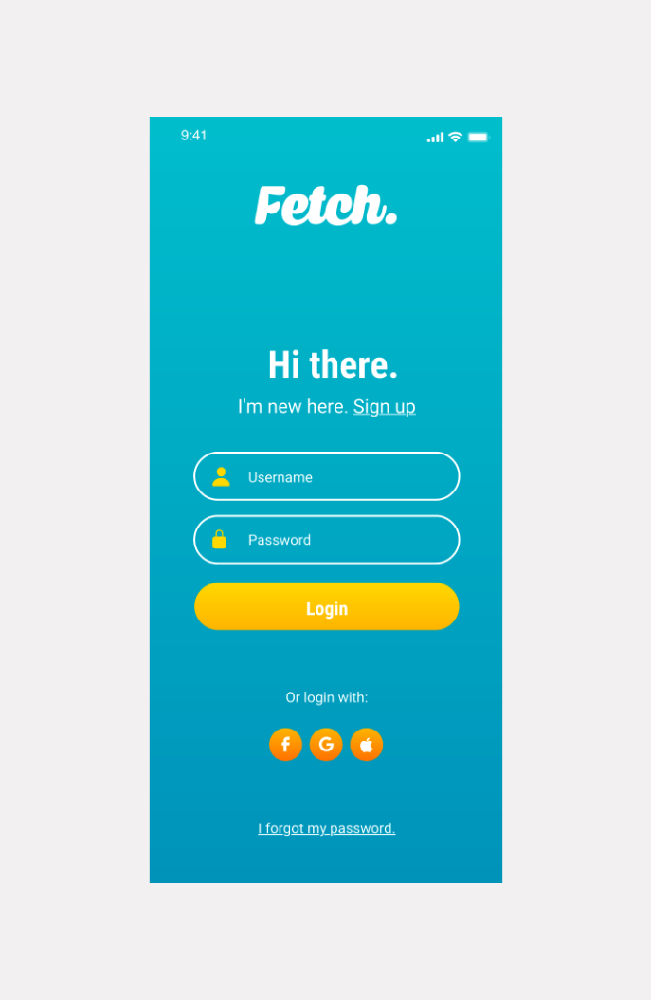
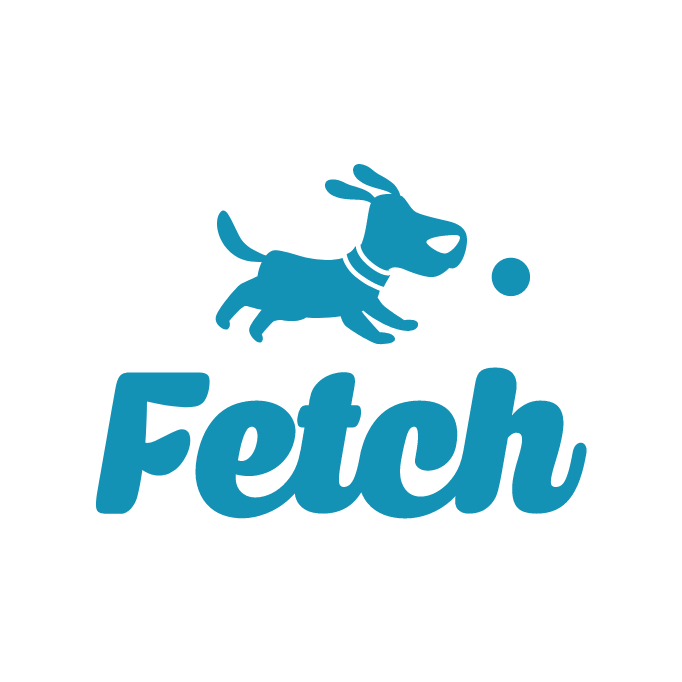

// B2C // B2B // MOBILE APP
Adoption, simplified. Joy, multiplied.
A better way to search and find your next fur friend.
Load Prototype
// CASE STUDY // FETCH
Fetch is a purpose-built platform designed to streamline the adoption process, reduce admin overhead, and help more animals find loving homes faster and easier than ever.
// B2C // B2B // MOBILE APP
A better way to search and find your next fur friend.
Load Prototype

Based on our research, we developed a User Persona. The User Persona helps to develop a dialog for the User Journey Map.
David Wright, 32. Software Developer from Boston, MA. Education: Bachelor's Degree. Relationship status: Single.
David loves dogs and has a small terrier mix named Enzo who he frequently takes with him hiking. Enzo is 2 years old and full of energy and wants a little buddy. Previously David was working full time in an office but now works from home due to coronavirus and has more time for a second pet now.
Goals: Enzo provides companionship and friendship. Finding the perfect friend for Enzo is a must. Cute Instagram pics of his dogs. Living in an apartment means having a house-trained pet is even more important. Get out of the house to exercise while walking his pet.
Frustrations: Limited space and no backyard. Pets that shed a lot. Limited information on shelter websites. Difficulty sifting through options of available dogs to find one who would be a good match. Behavioral + potty training can be difficult.
Ideal pet motivations (out of 6): Energy level 6, Age 1, Cleanliness 3, Level of training 5, Health 5, Attention needs 3.
Trusted brands: Instagram, Apple, Whole Foods Market, BarkBox, PetSmart, Orijen.
After we determined our key features, we developed a journey map that detailed our user, David, downloading Fetch to discover an adoptable dog that fits his unique needs. As you can see, his main pain point in the process was feeling overwhelmed with options but Fetch provided a unique and engaging experience in the search for a new pet.


During the interview process we found most people find the search for a dog overwhelming because the information is scattered across multiple platforms and locations. Filtering to their needs is difficult.
Using the data we collected from the interviews we created an affinity map to identify the similarities across the users.
Paper wireframes were created before moving onto the creation of Lo-Fi Wireframes. This helped to narrow down key features for focus on for the app.


Next we created wireframes and a Lo-Fi prototype.
We conducted a several user tests and based off of those users tests we made a few more alterations.


